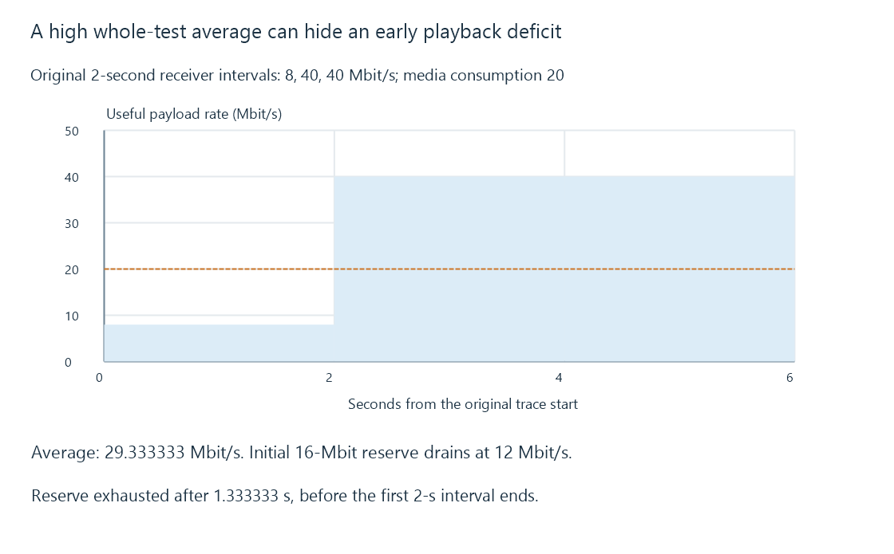

Network throughput and useful delivery rate
Network throughput measures delivered work over a stated interval and accounting layer, with chronological delivery determining whether media deadlines can be met.
A connection reports a high average rate, but playback stalls during a short slow interval. Both observations can be correct.
Throughput describes work delivered over time. Its meaning depends on which bytes were counted, where they were counted and which interval was used.
State the accounting layer
A negotiated PHY/link rate, transmitted transport bytes and useful media bytes are different quantities.
Protocol headers, repeated transmissions, acknowledgments and other traffic consume resources without all becoming new usable movie bytes. A sender’s count can also differ from the receiver’s successfully delivered count.
For a useful payload comparison, divide the relevant delivered bytes by the observation interval and retain the units. Eight bits form one byte; decimal Mbit/s and MB/s differ by that factor.
A six-second average hides the first deficit
Use this original receiver-side payload trace:
{
"intervalSeconds": 2,
"usefulBytes": [2000000, 10000000, 10000000],
"mediaMbitPerSecond": 20,
"initialReserveMbit": 16
}
The three interval rates are eight, forty and forty Mbit/s. Total useful data is twenty-two decimal MB, or 176 Mbit. Over six seconds, the average is approximately 29.333333 Mbit/s.
That average exceeds the twenty-Mbit/s media consumption rate. During the first interval, however, the deficit is twelve Mbit each second.

Assume continuous usable delivery within each interval and no other delay. The initial sixteen-Mbit reserve is exhausted after 16/12 seconds, about 1.333333 seconds. The first interval lasts two seconds.
The later high rates cannot retrospectively supply bytes before that first missed deadline.
The selected path sets another ceiling
For an original series of links with available useful capacities of 1000, 100 and 200 Mbit/s, the slowest stated link bounds continuous end-to-end capacity at one hundred.
That bound assumes no other limiting work. Storage, media preparation, transport windows or receiver consumption can reduce achieved delivery further.
A fast speed-test endpoint can use a different path from the Emby server, especially for remote playback.
Aggregate rate and one stream differ
Several parallel connections can use more aggregate capacity than one flow under their transport/window behavior. A headline measured with many flows is not automatically the rate an individual media request obtains.
Likewise, changing the media representation can reduce required payload without increasing the path’s delivery capability.
See Also
- Upload bandwidth and simultaneous remote streams
- Ethernet link speeds and end-to-end capacity
- TCP: an ordered byte stream for media delivery
- Buffering, ready media and playback reserve